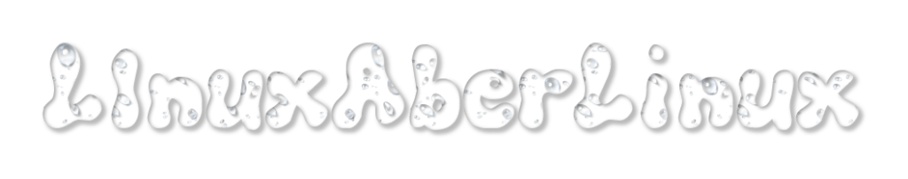
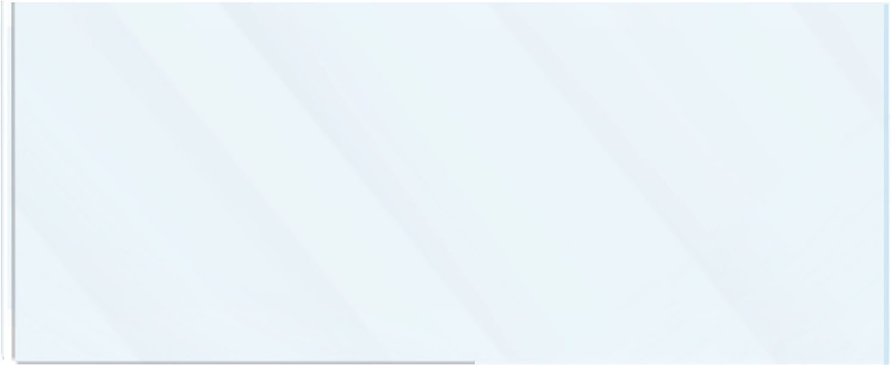

✨ Bem-vindo(a) ao meu espaço!
Espaço dedicado à minha trajetória, canais, trabalho como profissional de TI, criações e projetos pessoais.
🧑💻 Sobre mim
Sou formado em Tecnologia da Informação após 3 anos de estudo e prática no Instituto Federal — período que transformou completamente a minha forma de ver o mundo e de agir. Ao longo desses anos, dividi minha caminhada em três fases bem definidas:
📅 2024 — Ano Social
Minha primeira vista na escola, onde busquei agrupar o máximo de amigos e formar laços fortes. Fiz parte de grupos como o Banco e depois o Neo Banco (que sigo participando em 2025 e 2026). Também construí amizades e parcerias pela internet, dividindo minha identidade entre Emanoel e Aero.
📅 2025 — Ano do Conhecimento
Após perceber a queda de rendimento e a diferença de potencial no ano anterior, decidi quebrar limites e dominar o conhecimento. Estudei intensamente, aprimorei tudo o que já sabia e aprendi muito mais, com ajuda de professores e amigos formados. Contudo, fiquei muito focado nos estudos e acabei ficando sedentário, chegando a bater 80kg.
📅 2026 — Ano Físico e Filosófico
Este ano foquei em equilibrar corpo e mente: usei todo o conhecimento de 2025 para cuidar da nutrição e da atividade física, com rotinas e dieta bem definidas. Mudei meu peso para 67–69kg, muito mais saudável. Hoje busco também o equilíbrio emocional, a reflexão filosófica e o entendimento social — com mais leveza e menos rigidez.
🎮 Meus Canais e Projetos
@KnightAer0
🕹️ • Canal de jogos variados com foco total no Retrogaming e, claro, no nosso eterno carro-chefe: DOOM! Aqui você encontra vídeos com edição frenética, cheia de zueira, memes e thumbs ultra chamativas. Mas muito além da gameplay, nosso grande objetivo é levar a palavra de Deus e a verdade do Evangelho a todos, de um jeito leve, legal e divertido. Deus Abençoe!
@TV-AEr0
Um canal sem roteiro fixo — só curiosidade, tempo livre e vontade de explorar. Arquivos, hobbies, experimentos e tudo que não cabe no canal principal. Se você também pensa fora da caixa, bem-vindo.
TV-Aero é o canal das margens: o que sobra, o que surge, o que ainda não tem nome. Arquivos pessoais, hobbies alternativos, lazeres esquisitos e ideias jogadas no ar. Sem compromisso de frequência, sem nicho definido — só conteúdo genuíno de quem explora o que gosta. O canal de games é o principal. Este aqui é o resto — e o resto costuma ser o mais interessante.
☢️ Projeto de Jogo Futuro: Schlange-Mann
Jogo em desenvolvimento, iniciado em HTML e posteriormente portado para Ruby. É um esboço de algo maior que será lançado futuramente nas plataformas Itch.io, Newgrounds e GameJolt.
Um jogo de ação e estratégia 8-bit, que transforma a clássica ideia do "Cobrinha" em um campo de batalha nuclear, com perigos dinâmicos, inimigos inteligentes e sistema de radiação.
Status: Em desenvolvimento / Versão protótipo

📩 Contato Profissional e Redes
📧 E-mail para parcerias: emanoelbatistadacosta2058@gmail.com
- 💬 Discord: discord.gg/tgDT8zBKzX
- 📸 Instagram Principal: @knightaer0
- 🎵 SoundCloud: Sons Nuviais
- 🎮 Steam: Lojinha do seu Zé
- 📺 Twitch: Roxinho Hub
- 🌐 SpaceHey: Perfil SpaceHey